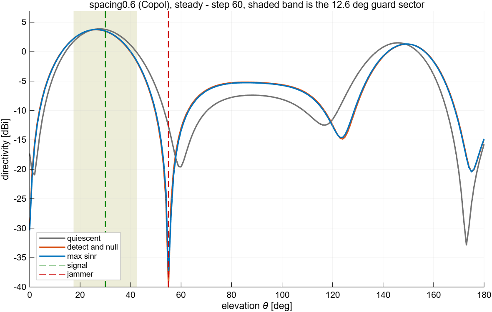
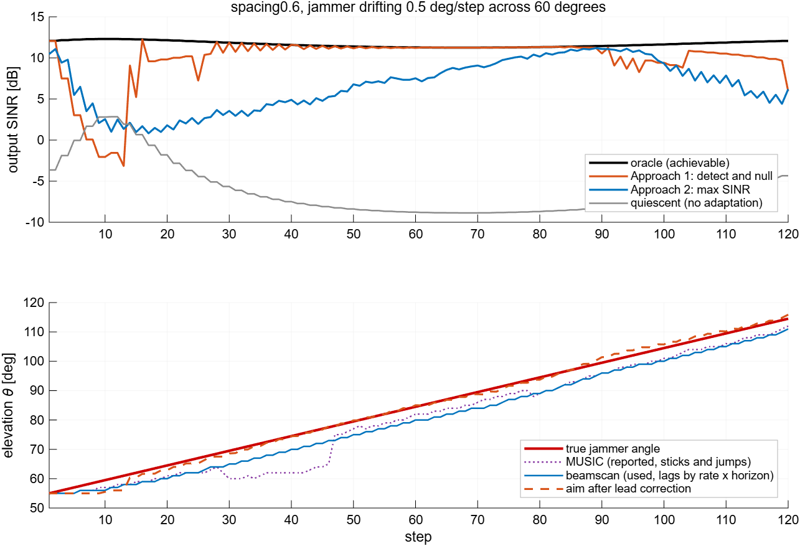

Anti-jam · clear implementation · walkthrough
A deliberately simple reimplementation, built to be explained rather than to win. One jammer of unknown direction, real measured element patterns, one complex weight per element per step. Two approaches kept separate on purpose: find the jammer and null it, or solve for maximum SINR and never look for it at all. Every constant in the method is either derived from the array or measured, and this document says which.
One jammer, somewhere on the sky, direction unknown. A wanted signal from a known direction. An array of N elements, and one complex weight per element, chosen once per step.
A plane wave from (θ, φ) produces a known pattern of amplitude and phase across the elements — the steering vector e(θ, φ). This is the one physical primitive the whole implementation is built from. It is read straight out of the measured CST element patterns, not from an analytic model, so it carries the real array's asymmetries.
Read the SINR as three statements about the pattern the weights produce: how much gain it has
towards the signal, how much towards the jammer, and how much noise it lets through. The last term
is proportional to ‖w‖² because receiver noise is independent on every element, so it
adds in power rather than coherently.
The whole job is to make the second and third terms small without touching the first.
It is an N-element complex vector — amplitude and phase, not phase
alone. Entry n is element n's far field in that direction, read straight out
of the CST export as Abs(Copol)·exp(i·Phase(Copol)).
The classical array model assumes eₙ = exp(i·k·dₙ·û): unit magnitude on every
element, phase set purely by element position, all elements identical and isotropic.
Nothing here assumes that, and the measured patterns say plainly that it would be wrong:
| property of e at (55°, 0°), spacing0.6 | classical eikd model | measured |
|---|---|---|
| element-to-element amplitude spread | 0.00 dB | 11.3 dB |
| departure of phase from a straight line across the array | 0° | 68.5° RMS, 125° max |
| amplitude spread over the whole sphere (median) | 0.00 dB | 14.5 dB |
Using the measured vector rather than the model costs nothing — it is a table lookup either way — and it means every result is a statement about this hardware. Element gain variation with angle, per-element phase from feed and orientation, whatever mutual coupling is present in the exported patterns, and any platform scattering CST modelled are all carried automatically, because they are simply what the field was.
It also has a practical consequence used later: because the magnitudes are real and unequal, a direction where the array radiates weakly gives a short vector. That is physically correct and is what makes the achievable SINR array-dependent — but it is also why any angle scan must normalise e to unit length first (section 4), or it reports where the array hears best instead of where the source is.
y = wᴴx, so gain in direction e is wᴴe, where
wᴴ is the conjugate transpose (the dagger; w' in MATLAB). Every formula
in the implementation uses that form — as does the rest of the anti-jam code in this repository.
The Milestone-1 pattern-synthesis side uses the other convention,
AF = Σ wₙEₙ = wᵀe with no conjugate, which is the natural one for shaping a pattern
you are transmitting. The two differ by conj(w), and that conjugate is applied at
exactly the two points where this folder calls compute_array_factor:
array_profile (measuring the quiescent beamwidth) and plot_pattern_cut
(drawing the pattern). Nowhere else. Letting it leak beyond those gives a beamformer that is right
in the table and mirrored in the figure, which is expensive to diagnose.
steering_vector.m · output_sinr_db.m
Four facts are measured once, per (array, target) pair, before any adaptation. Each one exists because assuming it instead caused a real failure in the previous implementation.
A jammer angularly closer to the target than the beamwidth is inside the main lobe. Nulling it cancels the wanted signal along with it, so that geometry is outside what this method claims to do, and it has to be recognised rather than scored as a failure.
The guard is half the wider 3 dB beamwidth. It is not a global number, and cannot be:
| array | elements | HPBW θ | HPBW φ | guard | mirror coherence |
|---|---|---|---|---|---|
| Monopoles | 14 | 32.1° | 54.1° | 27.0° | 0.185 |
| ManyDipoles | 20 | 23.0° | 49.4° | 24.7° | 1.000000 |
| spacing0.6 | 16 | 25.2° | 20.9° | 12.6° | 0.769 |
| patchs_with_monopoles | 6 | 165.6° | 47.7° | 82.8° | 1.000000 |
| Dipole | 1 | 129.4° | 360.0° | 180.0° | — |
| patch_back2back | 2 | 53.9° | 180.0° | 90.0° | 0.706 |
A note on wording first, because the shorthand is easy to misread. e is a function of direction: there is no single "steering vector of the array", there is the array's response e(θ, φ) evaluated at whatever direction you ask about. The ambiguity is that on some arrays two different directions return the same vector:
So the angles are emphatically not the same. What is the same is the electrical signature those two directions produce across the elements — a wave arriving from 150° puts exactly the same amplitudes and phases on the 20 elements as one arriving from 30°. The array has no measurement that could distinguish them.
Two distinct consequences follow, and they pull in opposite directions:
classify_jammer_motion.The pair tested is the mirror (180−θ, φ), not the antipode (180−θ, φ+180). Confusing the two produces a confident and wrong conclusion that the ambiguity does not exist.
The above is survivable. What is not is the jammer sitting at the signal's own mirror —
signal at 30°, jammer at 150°. Then the jammer and the signal are the same vector, and
you are asking for gain 1 and gain 0 from one and the same thing. This is exactly your
reading: the jammer cannot be attenuated without attenuating the signal identically, because the
beamformer only ever sees wᴴe and there is only one e.
What makes it dangerous is that the arithmetic does not complain:
σn²‖w‖² — the one part of the SINR the two-point
solve does not look at — annihilates the output. A test that only checked "did it null the jammer?"
would report success.
The 2×2 matrix CᴴC has condition number 8.4×1011
here, against 73 on Monopoles for the identical geometry. That is what the coherence
check in detect_and_null detects, and it refuses:
"…has the same steering vector as the signal to within 1.0000, so a null there would cancel
the wanted signal. Refusing to null." — falling back to the quiescent beam and its −20 dB.
An N-element array has N weights; one is spent holding gain on the signal, so N−1 remain to place nulls with. At N = 1 that is zero and the array provably cannot null anything. The correct output is the quiescent beam and a stated reason.
Separately, the target itself must be visible. patch_back2back at (30°, 0°) sits
113 dB below the array's best direction — a genuine co-pol pattern null. The array cannot
receive its own signal there, so no beamformer, including the perfect-knowledge oracle, can achieve
anything, and any score computed there is meaningless rather than bad. That pair is not a
test, and the profile says so.
array_profile.m · make_array.m
A real digital receiver hands you samples, not a covariance. Each step draws K snapshots per element. K is derived, not chosen: a covariance estimated from K samples of an N-element array lands within about 3 dB of the ideal once K ≈ 2N — the standard Reed–Mallett–Brennan result — so K = 32 for a 16-element array, and "why 32?" has an answer.
Why forget at all. The jammer moves and switches off. A plain running average would remember every place it has ever been and put the null at the average of them, which is nowhere useful.
Quote a horizon, not λ. "The system remembers about ten steps" is a sentence anyone in the room can reason about, and it explains a surprising share of the behaviour: why an on/off edge cannot be resolved from this covariance, and how long a null usefully survives the jammer switching off.
But there are two horizons, and they are not interchangeable. Nothing ever leaves this
average — a block from k steps ago just carries weight (1−λ)λᵏ. Summarising
that decaying weighting in one number can be done two ways: the effective window length
1/(1−λ) = 10, which says how much smoothing this is equivalent to, and the mean age
of the data λ/(1−λ) = 9, which says how stale the answer is. They differ by
exactly 1, since 1/(1−λ) − λ/(1−λ) = 1.
Window length governs memory — run lengths, the motion window. Mean age governs lag: the beamscan reports where the jammer was on average, and that average is 9 steps old. Using the wrong one in the lead over-shoots by one step's worth of motion, every step.
λ/(1−λ), not the window length
1/(1−λ) = 10. (Above about 0.25°/step the ratio scatters between 8 and 10, within the 1°
grid quantisation and the onset of the smear saturation described in section 11.) On a stationary
jammer the same estimator is exact to 0.00°.simulate_snapshots.m · sample_covariance.m
Two different questions, answered by two different properties of the covariance, and it is worth keeping them straight.
The eigenvalues say whether. A covariance built from a few strong sources plus noise has a handful of large eigenvalues — one per source — above a flat floor of small ones that are noise and nothing else. Counting how many rise above that floor counts the sources: two means signal plus jammer, one means the signal alone. Nothing is hardcoded, so the answer can change during the run, which is what presence detection requires.
A power scan says where. Sweep a unit-length steering vector across the sky and measure the power the array would receive pointing that way. The largest value outside the guard sector is the jammer.
Unit-norm steering vectors. Both spectra are only source estimates when e has unit norm. With raw CST vectors the scan multiplies in the array's own gain variation and reports the direction the array hears best rather than where the jammer is. Measured here the jammer was at 55° and the scan said 132°.
It is called out here because it is silent. The spectrum is well formed, the peak is sharp and narrow, the answer is confident, nothing errors and no value is non-finite. "Plausible" means the wrong answer looked like a right one — without ground truth to check against, you would ship it. That is the whole argument for keeping an oracle in the folder: not to flatter the results, but to catch estimators that are confidently wrong.
Exclude the guard sector. The wanted signal is one of the strong sources, so both scans find it too, and it is often the stronger peak. Masking the guard sector is exactly what makes "the largest remaining peak" mean "the jammer". Without it, Approach 1 confidently and precisely nulls your own signal.
MUSIC is the textbook answer and is sharper on a stationary source, because it measures a null in the noise subspace rather than a peak, and a null can be arbitrarily deep. On a moving source it is measurably worse, and the reason is instructive: a jammer smeared across ten steps of covariance memory is no longer a point source. Its track occupies a multi-dimensional subspace — the source count reads 3 on 91 of 120 steps of a drifting run — so MUSIC makes its noise subspace orthogonal to the whole track, the spectrum goes near-singular along a broad arc, and the peak inside that arc is numerically arbitrary. It sticks, then jumps.
| estimator | median lag | mean |lag| | max |lag| | behaviour |
|---|---|---|---|---|
| MUSIC | 3.50° | 5.03° | 13.50° | sticks, then jumps |
| beamscan | 4.50° | 4.65° | 6.00° | smooth |
The beamscan's lag is exactly rate × mean age, because a power measure peaks at the
power-weighted centre of where the jammer has been. That is a predictable error, and the
lead correction in the next section removes it. MUSIC's 13.5° excursion cannot be led out.
Switching the null over to the beamscan took the drift case from 7.5 dB / score 66 to
11.1 dB / score 99, against an achievable 11.5 — measured with identical settings and
identical noise, changing only which spectrum feeds the null.
MUSIC's real advantage is resolving two closely-spaced sources — which a single-jammer problem never asks for, and the guard sector already excludes the region near the signal. Both are computed and reported so this can be shown rather than claimed; there is no switch between them.
The scan is exactly what it looks like: form R, then evaluate
e_unitᴴ R e_unit at every direction on the grid — 181 × 360 = 65,160
of them here — and take the largest value outside the guard sector. It is a brute-force search, and
on a real receiver that is the expensive part of the whole method by a wide margin.
| per adaptation step | ms | share |
|---|---|---|
| sample_covariance | 0.055 | 0.2% |
| estimate_jammer_angle (both scans) | 30.415 | 95.9% |
| — beamscan over the grid | 15.001 | 47.3% |
| — MUSIC over the grid | 10.883 | 34.3% |
| — re-normalising the manifold | 5.213 | 16.4% |
| — eig(R), 16×16 | 0.045 | 0.1% |
| detect_and_null (2×2 solve) | 0.065 | 0.2% |
| max_sinr_weights (no scan) | 0.057 | 0.2% |
| full step as shipped | 31.7 | 100% |
So is it usable in real time? As written, at about 32 Hz — fine for a slowly-moving jammer and useless for anything fast. But almost all of that is avoidable, and three of the reductions cost nothing:
| variant | ms/step | max update rate |
|---|---|---|
| as shipped — both scans, manifold re-normalised each step | 31.7 | 32 Hz |
| beamscan only, manifold precomputed once | 14.7 | 68 Hz |
| coarse 5° grid, then refine ±5° at 1° | 0.46 | 2,170 Hz |
| 1-D θ scan at a known azimuth | 0.075 | 13,300 Hz |
| Approach 2 — no scan at all | 0.062 | 16,200 Hz |
make_array.The structural point, which is the one worth taking to a design review: Approach 2 needs no scan whatsoever. It never estimates a direction, so there is no grid, no search, and no resolution/compute trade to argue about — just a covariance update and one 16×16 solve, at 0.062 ms. If compute budget is the binding constraint, that is the deployable algorithm, and the fact that it gives up 3.4 dB on a drifting jammer has to be weighed against being 500× cheaper than the method that beats it.
−10·log₁₀(λ) = 0.46 dB per step. It therefore needs about 52 steps to fall below
threshold, so a jammer toggling every 10 steps never appears to switch off at all: presence reads
100% against a true duty cycle of 50%, at every JNR from 3 to 20 dB. The lateness is set by
jammer strength, not by the toggle period. It costs nothing here, because the right action
for both steady and onoff is the same — hold the null.estimate_jammer_angle.m · noise_floor_power.m
"Where is it" and "what has it been doing" are different questions with different evidence — a single covariance versus a history. Keeping them in separate functions is deliberate: fusing them is how the previous implementation grew a single 485-line function that could not be tested or explained in pieces.
onoff. Hold the last known position. The null costs
almost nothing while the jammer is off and is already in place when it returns.drifting. Fit a straight line to the recent angle
history; extrapolate (below).steady. Null the median of the window, which removes
grid quantisation jitter.Both quantities on the right are already known: the rate is the slope this function fits, and the
horizon is 1/(1−λ) from the covariance. Nothing is fitted to performance and there is
no coefficient to choose. If λ changes, the lead changes with it automatically.
On the demo scenario it takes the aim error from −4.50° (lagging) to −0.37°, and mean absolute error from 4.65° to 0.75°.
Getting the horizon right here matters more than it looks. Leading by the window length (10) instead of the mean age (9) over-shoots by one step's motion every step; correcting it is worth +0.4 to +1.3 dB across the qualified drift range, and takes the demo scenario from 10.8 dB / score 98 to 11.1 dB / score 99. It is a correctness fix, not a tuning change — the lead has no free coefficient either way.
guard_deg, is inert below 1.26°/step, and rescues the high-rate collapse
(2°/step: −14.1 → −4.7 dB).classify_jammer_motion.m · detect_jammer.m
Among all weight vectors that hold unit gain on the signal and place an exact zero on
the jammer, this picks the one with the smallest norm. Since the noise reaching the output is
σn²‖w‖², "smallest weights that satisfy the constraints" is not an aesthetic
preference — it is the best of them.
What is remarkable about it, and worth saying out loud: there is no covariance in it. No data, no inverse of an estimated quantity, no diagonal loading, nothing to converge. It needs only two directions, and the whole of it fits on a whiteboard. That is what makes Approach 1 genuinely independent of Approach 2 rather than a variation on it.
What it gives up. It shapes the pattern at exactly two points and is indifferent to everything else. It ignores how strong the jammer actually is — a jammer 20 dB down gets the same infinitely deep null as one 40 dB up, and the degrees of freedom are spent either way. And it is only as good as the estimated angle; Approach 2 never needs an angle and so cannot be wrong about one.
detect_and_null.m · quiescent_weights.m
This is the minimum-variance solution: among all w with unit gain on the signal, it
minimises total output power wᴴRw. The signal's contribution is pinned at unit gain by
the constraint, so minimising the total minimises everything else — jammer and noise
together, in whatever proportion they happen to arrive.
It never asks where the jammer is. It does not know and cannot be told. It simply refuses to pass power that is not coming from the signal direction, and a jammer is by definition power that is not coming from there. That is the whole of Approach 2, and it is why it cannot be wrong about an angle: it never estimates one.
max_sinr_weights.m
The wanted signal is inside the covariance — a real receiver cannot remove what it is trying to receive. That makes this MPDR rather than MVDR, and it has a sharp consequence: if the assumed signal direction is even slightly wrong, the solver sees wanted signal arriving from a direction it is not protecting, correctly identifies it as "power that is not the signal", and cancels your own transmission. The stronger your signal, the more of it there is to cancel — so this failure gets worse exactly when things should be getting easier.
Adding δ·I raises the noise floor the solver believes in, which caps how much of any
single direction it is willing to cancel, including yours.
| δ / P_noise | SNR 0 dB | SNR 10 dB | SNR 20 dB | worst |
|---|---|---|---|---|
| 0.1 | 6.5 | −0.1 | −9.2 | −9.2 |
| 1 | 9.1 | 4.4 | −4.8 | −4.8 |
| 10 | 11.3 | 15.2 | 7.8 | 7.8 |
| 30 | 10.7 | 16.8 | 12.3 | 10.7 |
| 100 | 7.7 | 14.9 | 13.7 | 7.7 |
| 300 | 2.6 | 11.2 | 13.9 | 2.6 |
δ is scaled to the noise floor, not to trace(R). The trace is dominated by
the jammer, so trace scaling would raise your own loading whenever the jammer got stronger —
blunting the very null you need against it. The noise floor is the one part of the covariance that
does not move when the jammer does.
max_sinr_weights.m · noise_floor_power.m
The oracle is built from the true directions and true powers. It is not deliverable — it is handed the answer — and it lives in its own file so that is impossible to miss. It exists so that every score can be quoted as "98, against an achievable 11.5 dB" rather than "98 out of 100".
The rule the reporting code enforces: the achievable dB is printed on the same line as the score, always. A score of 99 on a two-element array whose ceiling is 11 dB is not better than 72 on a sixteen-element array whose ceiling is 31 dB, and a table of bare scores misleads everyone who reads one.
A pleasant consequence worth keeping: an array that can do nothing scores 100 for doing nothing, because its quiescent beam is its optimum. The one-element array is not marked as failing; it is marked as achieving everything available to it, which is the truth.
Scoring starts after three memory horizons. The covariance needs time to fill and the motion classifier needs its window; scoring the warm-up measures how fast the estimator converges, not how well the algorithm works, and mixing the two is how run length silently becomes a confound.
oracle_weights.m · compare_approaches.m
spacing0.6, 16 elements, guard 12.6°, jammer at 25° separation, SNR 0 dB, JNR 20 dB.
| scenario | quiescent | detect + null | max SINR | achievable |
|---|---|---|---|---|
| steady | −3.6 dB · 0 | 12.1 dB · 100 | 11.4 dB · 100 | 12.1 dB |
| on/off | 4.9 dB · 53 | 12.1 dB · 100 | 11.6 dB · 99 | 12.2 dB |
| drift 0.5°/step | −7.7 dB · 0 | 11.1 dB · 99 | 7.7 dB · 41 | 11.5 dB |


rate × mean age; the aim after the lead correction (orange dashed)
sitting on the truth. Above: Approach 1 reaching the achievable ceiling once its window
fills, Approach 2 climbing slowly because it has no model of the motion to lead with, and the
quiescent beam collapsing as the jammer walks into its sidelobes.The lead correction is arithmetic, not a filter. It pays while the fitted rate is well measured and stops paying when it is not.
| drift rate | detect + null | achievable | aim error | score |
|---|---|---|---|---|
| 0.25°/step | 11.1 dB | 11.2 dB | 0.34° | 98 |
| 0.50°/step | 8.9 dB | 11.2 dB | 0.72° | 70 |
| 1.00°/step | 1.9 dB | 11.1 dB | 3.75° | 25 |
| 1.50°/step | −4.0 dB | 11.0 dB | 5.61° | 3 |
[θ, θ̇, φ, φ̇], was
qualified to about 10°/s — an envelope some 20× wider. That filter was worth +35 points on
drifting jammers and was provably inert on everything else. It is the single largest piece of
complexity in that stack and it buys exactly one scenario. Leaving it out is a deliberate trade, and
this is its price: a narrower envelope, not a few dB.What the missing piece is. The previous implementation tracked the jammer with a constant-velocity Kalman filter. In one sentence: it maintains a running estimate of both the jammer's angle and its rate of change, and each step it blends the new measurement with its own prediction, weighting whichever it currently trusts more. The point of it, here, is a lower-noise estimate of the rate — which is what the lead is multiplied by.
Why that framing lets us settle it without building it. The aim is
angle + rate × mean age. A better filter can only improve the rate term. So
feed the loop the true rate and you have an upper bound on any rate estimator that could
ever exist, Kalman included — and if that bound is close to what the plain line-fit already gets,
the filter is not worth building. This is the same move that closed the graded-release question in
the previous work: bound the family before building members of it.
Splitting it further — feeding the loop the true angle — separates which half of
angle + rate × mean age is actually binding.
| drift rate | no lead | fitted slope (what ships) | perfect rate (bounds any Kalman) | perfect angle | oracle |
|---|---|---|---|---|---|
| 0.25°/step | 6.4 | 11.1 | 11.1 | 11.2 | 11.2 |
| 0.50°/step | 3.3 | 8.9 | 10.4 | 11.2 | 11.2 |
| 1.00°/step | −0.3 | 1.9 | 3.1 | 11.1 | 11.1 |
| 1.50°/step | −3.6 | −4.0 | −4.2 | 11.0 | 11.0 |
rate × mean age lag model itself stops holding: the covariance smear saturates, the
angle no longer lags by the full amount, and correcting by the true rate overshoots.So what would move it? The angle's lag is set by the covariance memory, so the lever is λ, not a predictor. Shortening it is worth far more than any filter — verified over five seeds, spread ±0.1–0.4 dB:
| drift rate | λ = 0.90 (memory 10) | λ = 0.70 (memory 3) | gain | achievable |
|---|---|---|---|---|
| 0.50°/step | 8.0 dB | 10.9 dB | +2.9 dB | 11.2 dB |
| 1.00°/step | 0.2 dB | 8.5 dB | +8.3 dB | 11.1 dB |
| 1.50°/step | −4.3 dB | 5.2 dB | +9.5 dB | 11.0 dB |
drifting, and then amplifies it by the lead. SINR falls to −17 dB on
individual steps.
Which closes the loop: the fix for that is the fast presence covariance — already on the deferred list. Knowing quickly that the jammer has stopped transmitting is what makes a short memory safe, and a short memory is what is worth 8 dB on drift. The ordering is: fast presence detector first, shorter memory second. The Kalman filter is not on the path at all.
steady and onoff take the same action — its
value is anticipation, acting before the jammer returns.Two features are recorded as not to be reintroduced: graded null release (built, measured, capped at +0.9 mean with zero extra passing cells) and data-driven adaptive loading (+0.00 pp across 90 cells, and it crashed two arrays). Diagonal loading itself is mandatory; it is the adaptive variant that is worthless.
These are the only numbers in the method that need defending, and they fit on one screen at the
top of run_demo.m. Only the first and the last are chosen; the two in between are
computed from λ.
Two tuned numbers, λ and the loading factor; everything else follows. The two memory quantities are both derived from λ and are not interchangeable — see section 3. Beyond them: K = 2·N from Reed–Mallett–Brennan, the guard from the array's beamwidth, the eigenvalue threshold from the Marchenko–Pastur edge, the run lengths from the estimators' convergence requirements, and the lead cap from the guard.
| file | what it does |
|---|---|
| load_array | Parse a CST folder, stack one polarization component. |
| steering_vector | The array's response in one direction. The physical primitive. |
| array_profile | Guard sector, mirror coherence, degrees of freedom, target visibility. |
| make_array | The antenna and its target, as one object. |
| make_scenario | The ground truth. Never passed to an algorithm. |
| simulate_snapshots | Truth in, snapshots out. The boundary. |
| sample_covariance | What the array has been hearing lately. |
| noise_floor_power | The noise level, for the threshold and the loading. |
| estimate_jammer_angle | Whether (eigenvalues) and where (beamscan; MUSIC reported). |
| classify_jammer_motion | Steady / onoff / drifting, and where to aim. |
| detect_jammer | The seam: calls the two above, returns one state. |
| detect_and_null | Approach 1. Two directions, closed form. |
| max_sinr_weights | Approach 2. Loaded minimum-variance solve. |
| quiescent_weights | The plain beam: baseline and graceful fallback. |
| oracle_weights | The ceiling. Not deliverable. |
| output_sinr_db | The one scorer. |
| run_closed_loop | The whole method, once per step. |
| compare_approaches | Table, score with its ceiling, CSV. |
| plot_pattern_cut | The picture that makes the null visible. |
| run_demo | The main script. Read it top to bottom. |
Depends on MATLAB/matlab_utils/ for CST parsing and pattern maths, and on nothing in
MATLAB/antijam_utils/. Runs on MATLAB R2020a. Results are written to
MATLAB/antijam_clear/results/.
Part of: Antenna Array Pattern Optimization Tool — anti-jam milestone, clear reimplementation.